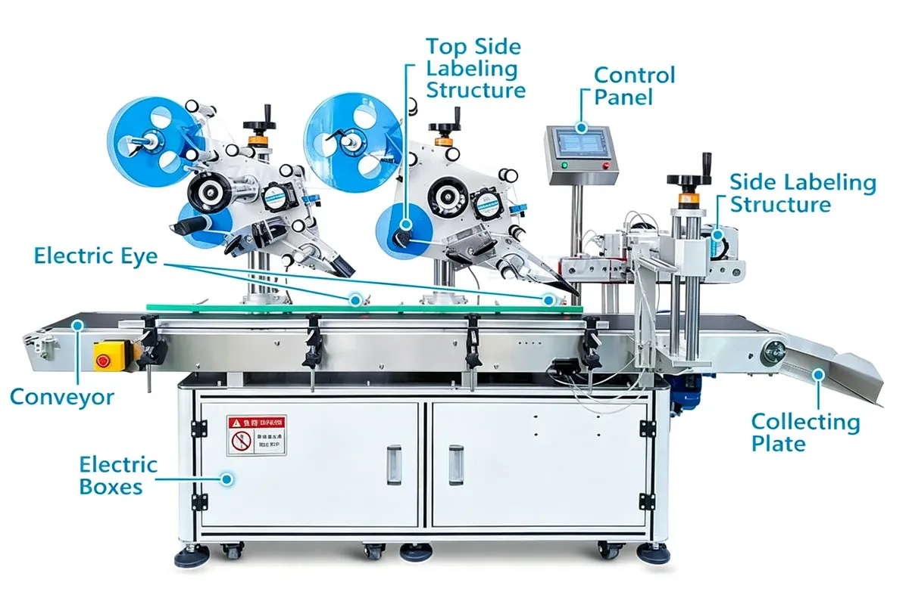
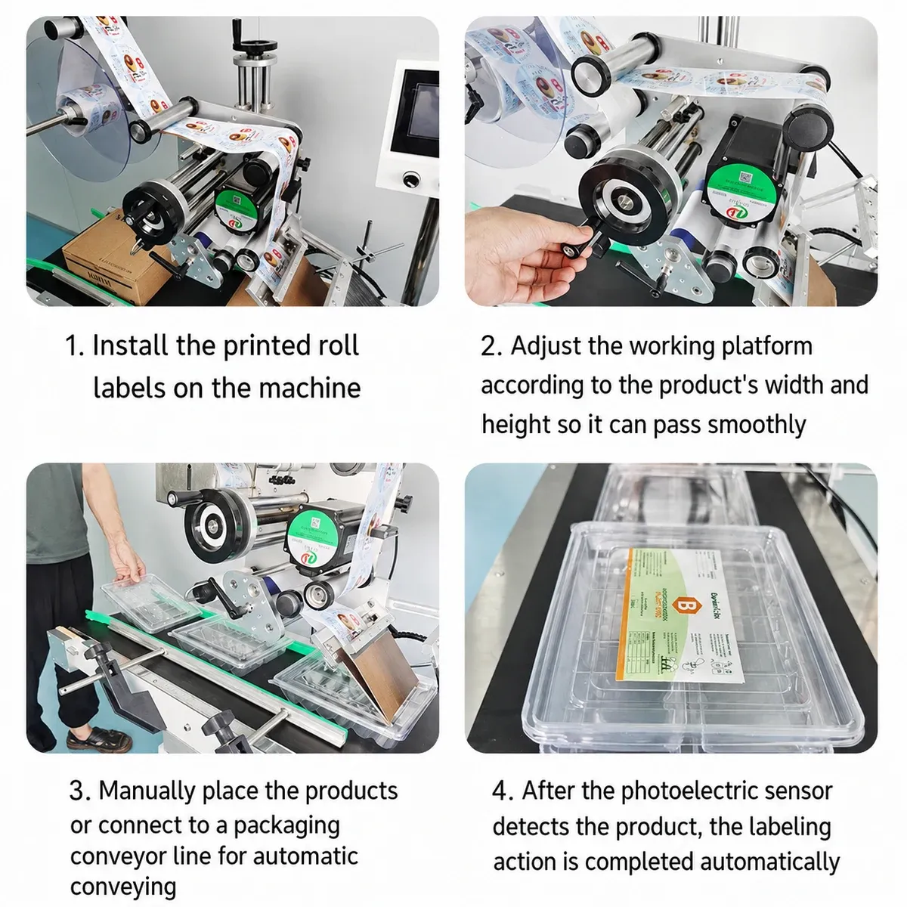
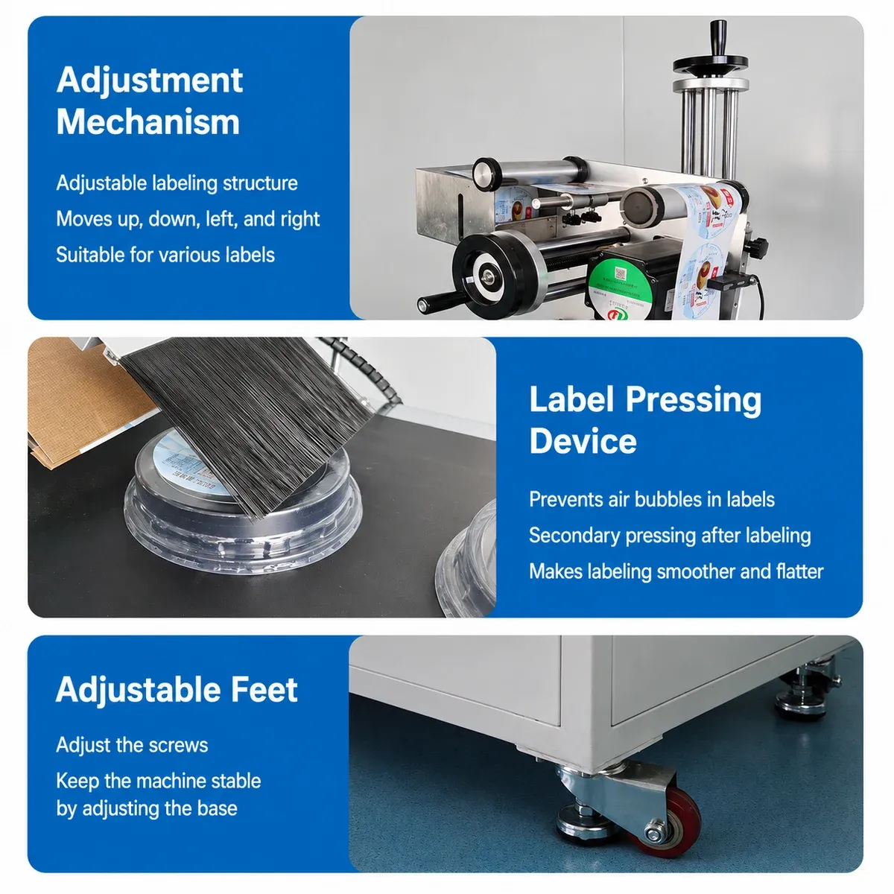
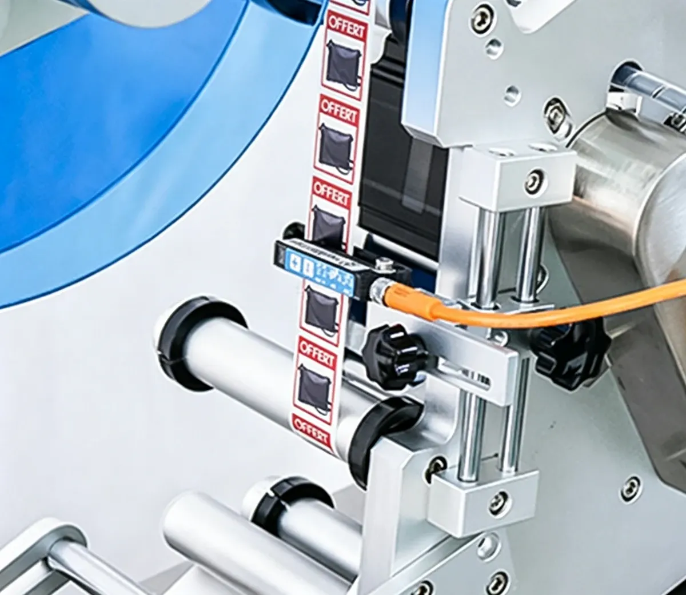

01
More consistent label placement
Labeling Machines
Automatic Security Sticker Labeling Solution for Cosmetic Boxes, Hanging Boxes and Cartons
Note: Technical specifications are for reference. Final performance depends on package dimensions, label specifications and machine configuration.
PLB833
The PLB833 Automatic Double-Side Corner Tamper-Evident Labeling Machine applies self-adhesive security labels across the edges and corners of boxes. A dual-head labeling system with dedicated folding mechanisms applies labels to the upper surface and folds the remaining section over the box edge.
This creates a tamper-evident seal that helps show whether the package has been opened. The PLB833 is suitable for cosmetic boxes, hanging paper boxes, electronics packaging and other cartons that require automatic corner sealing or anti-tamper sticker application.

PLB833
For many cosmetics, electronics and retail products, ordinary top labeling does not show whether the box has been opened. A corner security label solves this by bridging two adjacent package surfaces.
More consistent label placement
Higher production efficiency
Lower labor requirements
Better package appearance
More reliable security-seal positioning
PLB833
Suitable packages include folding cartons, paper boxes, hanging boxes, cosmetic cartons, electronics packaging and small retail boxes. Standard label size: 15–250 mm long × 15–150 mm wide.
Cosmetic boxes
Perfume boxes
Skincare packaging
Hanging paper boxes
Electronics boxes
Small appliance packaging
Pharmaceutical cartons
Personal-care product boxes
Retail cartons
Other compatible rectangular packages
PLB833
Product size is customized according to the application — box dimensions should always be confirmed before quotation and machine production.
Cosmetic boxes, skincare packaging, perfume boxes and personal-care cartons.
Electronic product boxes, accessories packaging and small electronics cartons.
Can be used for compatible cartons requiring tamper-evident security labeling.
Suitable for hanging boxes, folding cartons and other rectangular retail packages.
PLB833
The PLB833 is equipped with two labeling heads. These labeling units apply stickers to the upper surface of the products before the labels are folded around the package edges. The dual-head structure allows the machine to handle double-side corner labeling in one automatic process.
A dedicated folding mechanism bends the extended part of the label from the top surface down onto the side of the box. This creates an anti-tamper seal across the package edge, especially useful for products that require visible evidence if the carton has been opened.
The working height of the folding structure can be adjusted according to the package. This makes the machine suitable for different carton heights and labeling positions.
Brushes help press the labels onto the box surface during application. This helps reduce trapped air and label bubbles, improve adhesion and improve finished package appearance.
The machine uses PLC control together with a digital touchscreen interface. Operators can monitor machine status and adjust production settings more conveniently. The interface language can also be customized according to customer requirements.
The adjustment components are grouped together to simplify machine setup. This makes it easier to change the labeling position when switching between different products. Proper adjustment also helps maintain labeling accuracy.
The label sensor detects labels automatically and controls label separation. Sensor sensitivity can be adjusted according to different label materials. This helps maintain stable label dispensing during production.
The standard labeling accuracy is approximately ±1 mm. This specification excludes errors caused by inconsistencies in the product or label itself. Product dimensional variation and inconsistent label cutting can affect the final labeling result.
The standard labeling speed is approximately 30–60 pcs/min. Actual production speed depends on box dimensions, label size, labeling position, product spacing, folding distance and product consistency.
PLB833
Products are transported automatically to the labeling station. The labeling heads dispense self-adhesive labels onto the upper surface of the package. A dedicated folding structure then presses the excess section of the label over the box edge and onto the side surface.
This creates a corner seal that can act as a tamper-evident closure. The machine can perform corner security labeling continuously as products pass through the conveyor.

PLB833
Product Feeding
Product Positioning
Label Detection
Top Label Application
Edge Folding
Side Label Pressing
Finished Package Output
PLB833
The main advantage of the PLB833 is its ability to convert a standard self-adhesive sticker into a security closure. The label is first applied to the top of the carton. The folding mechanism then wraps the unused portion of the sticker across the edge and presses it onto the side.
Once the package is opened, the seal is normally disturbed or broken, providing visible evidence of opening. For higher accuracy requirements, actual package and label samples are recommended before production.

PLB833
The standard labeling speed is approximately 30–60 pcs/min. Actual production capacity depends on the package and labeling requirements; larger labels or longer folding distances may reduce the final output.
Box dimensions
Label size
Labeling position
Product spacing
Folding distance
Product consistency
PLB833
The label sensor detects labels automatically and controls label separation. Sensor sensitivity can be adjusted according to different label materials, helping maintain stable label dispensing during production.
The adjustment components are grouped together to simplify machine setup. This makes it easier to change the labeling position when switching between different products, and proper adjustment helps maintain labeling accuracy.

PLB833
What's included: main labeling machine, conveyor system, dual labeling heads, label dispensing system, corner folding structures, label smoothing brushes, PLC control system, touchscreen control panel, label detection sensors, centralized adjustment structure.
Product guides can be customized according to the package.
Folding structures can be customized according to the package, including special fixtures for non-standard cartons.
Different label sizes are available according to the package and required tamper-evident folding area.
Different labeling positions can be set according to the application.
Conveyor dimensions can be customized according to production requirements.
The touchscreen language can be customized according to customer requirements.
Coding or printing equipment can be added according to the application.
The machine can be integrated into a production line with upstream and downstream equipment.
PLB833
Upstream of the PLB833.
Upstream of the PLB833.
Upstream of the PLB833.
Upstream of the PLB833.
Downstream of the PLB833.
Downstream of the PLB833.
Downstream of the PLB833.
Downstream of the PLB833.
Downstream of the PLB833.
Watch the PLB833 automatic double-side corner tamper-evident labeling machine in operation.
PLB833
Share your box size, label size, required labeling position and corner folding direction. PACKGENIX can review the carton and labeling requirements and recommend the appropriate folding structure and optional configuration.